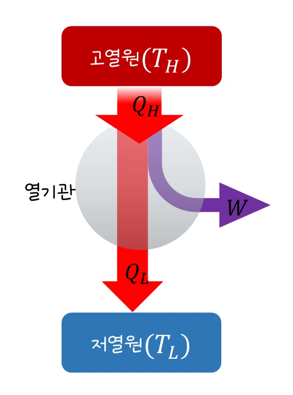
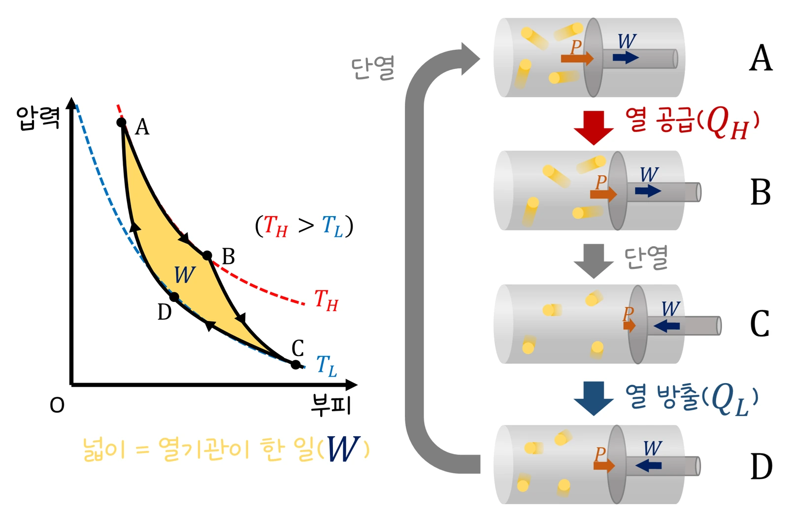

대학 열통계물리 · 웹툰 4화 「좋은 엔진은 열을 전부 일로 바꿀 수 있는가」
단원자 이상기체 1 mol로 고온·저온 열원 온도와 등온 팽창비를 바꿔 카르노 순환을 돌리고 Q_h, Q_c, 기관이 한 일 W_out, 효율을 기록했습니다. 800 K/300 K에서 받은 열 4610.5 J 중 1728.9 J를 마찰이 없어도 반드시 버려 효율은 62.5%였고, 팽창비를 3배로 키워도 효율은 그대로였습니다. 이상기체 카르노 순환으로 e = 1 − T_c/T_h를 유도하고 냉동기·히트펌프 성능계수의 상한을 구합니다.
실험 데이터 되짚기
실험 안내: 자유 탐구 탭에서 고온 열원 T_h(400~1200 K), 저온 열원 T_c(250~400 K), 등온 팽창비 V₂/V₁(2 · 3 · 4배)를 고르고 순환 1회 돌리기를 누르면 P–V 순환과 함께 Q_h, Q_c, W_out, 효율, 단열 구간 일, 최대 출력 효율(Curzon–Ahlborn), 같은 열원의 냉동기 COP 상한이 계산되어 기록표에 자동으로 쌓입니다(T_c가 T_h보다 낮아야 실행됩니다). T_c/T_h가 다른 조합을 4가지 이상 기록하면 데이터 검증 탭에서 효율–T_c/T_h 직선(기울기 −1, 절편 1)과 마지막 순환의 구간별 장부를 볼 수 있습니다. 모형: 준정적 이상 순환, V₁ = 10.0 L, W는 계가 받은 일, W_out = −W.
| T_h (K) | T_c (K) | V₂/V₁ | Q_h (J) | Q_c (J) | W_out (J) | 효율 |
|---|---|---|---|---|---|---|
| 800 | 300 | 2배 | 4610.5 | 1728.9 | 2881.6 | 62.5% |
| 800 | 300 | 3배 | 7307.5 | 2740.3 | 4567.2 | 62.5% |
| 600 | 300 | 2배 | 3457.9 | 1728.9 | 1728.9 | 50.0% |
| 1200 | 300 | 2배 | 6915.8 | 1728.9 | 5186.8 | 75.0% |
| 400 | 300 | 2배 | 2305.3 | 1728.9 | 576.3 | 25.0% |
| 1000 | 250 | 2배 | 5763.1 | 1440.8 | 4322.4 | 75.0% |
팽창비를 2배에서 3배로 키우면 Q_h와 W_out은 커지지만 효율은 62.5% 그대로입니다. 효율은 T_c/T_h만으로 정해져 1200/300과 1000/250(둘 다 비 0.25)이 똑같이 75.0%였습니다. 모든 줄에서 Q_c/Q_h = T_c/T_h이며 Q_c는 결코 0이 되지 않습니다 — 마찰이 없어도 저온 열원으로 열을 버려야 순환이 닫힙니다. 두 단열 구간의 일(800/300 K에서 ±6235.8 J)은 정확히 상쇄되고, 남는 일은 두 등온 구간 열의 차이입니다.
순환이므로 ΔU = 0, W_out = Q_h − Q꜀, 효율 e = W_out/Q_h = 1 − Q꜀/Q_h.
이상기체 카르노 순환: Q_h = nRT_h ln(V₂/V₁), Q꜀ = nRT꜀ ln(V₃/V₄). 두 단열 곡선(TVγ−1 = 일정)에서 V₂/V₁ = V₃/V₄이므로
Q꜀/Q_h = T꜀/T_h ⇒ e_Carnot = 1 − T꜀/T_h
Q꜀ = 0이려면 T꜀ = 0 K여야 합니다. 마찰이 없어도 저온 열원은 필수예요. 제2법칙(켈빈·클라우지우스)에 따라 어떤 기관도 같은 두 열원 사이에서 카르노보다 효율이 높을 수 없습니다.
교재 그림
열기관의 에너지 흐름

고열원에서 받은 Q_H 중 일부만 일 W가 되고, 나머지 Q_L(본문의 Q꜀)은 반드시 저열원으로 버려집니다. W = Q_H − Q_L, 효율 e = W/Q_H.
교재 그림
카르노 순환 — 등온 두 번, 단열 두 번

A→B는 고온 T_H에서 열 Q_H를 받으며 등온 팽창, C→D는 저온 T_L에서 Q_L을 버리며 등온 압축, 나머지 두 구간은 단열입니다. 닫힌 곡선의 넓이가 한 순환 동안 한 일 W예요.
움직여 보기
카르노 순환을 T–S 그림으로 — 넓이가 곧 열과 일
T–S 그림에서 카르노 순환은 직사각형입니다. 위 변 아래 넓이 T_hΔS가 받은 열 Q_h, 아래 변 아래 넓이(파랑) T_cΔS가 버리는 열 Q_c, 보라 사각형이 일입니다. 팽창비를 키우면 폭(ΔS = R ln(V₂/V₁))만 넓어져 효율은 그대로, 파랑 넓이는 T_c = 0 K가 아니면 사라지지 않습니다. (단원자 1 mol, 준정적)
· 카르노 기관은 무한히 느려 출력이 0입니다. 유한 시간 최대 출력의 효율은 대략 1 − √(T꜀/T_h)(Curzon–Ahlborn), 800/300 K에서 약 38.8%로 실제 발전소 40% 안팎과 비슷합니다.
· 냉동기 성능계수 상한 COP = T꜀/(T_h − T꜀), 히트펌프 난방 상한 T_h/(T_h − T꜀).
“발전소 효율이 40%래! 나머지 60%는 냉각탑으로 버린다고? 기술자들이 게으른 거야. 마찰만 없애면 100% 가능!”
웹툰 4화 #1 · 뭉치가 발전소 사진을 들고 온다
“그리고 그 차이를 0으로 만들 방법은 T꜀ → 0뿐이다. 마찰이 없어도 1728.9 J은 반드시 버려진다. 뭉치가 말한 ‘냉각탑 없애기’는 기관을 멈추는 일이다.”
웹툰 4화 #4 · 카르노 순환 수치 장부
COP_max = T_c/(T_h − T_c) = 255/(298 − 255) = 255/43 ≈ 5.93. Q_c = COP × W = 5.93 × 100 ≈ 593 J. 에너지 보존으로 부엌에 버리는 열 Q_h = Q_c + W = 593 + 100 = 693 J. 에너지를 만드는 것이 아니라 옮기므로 COP는 1보다 클 수 있다. COP ≈ 5.93, 빼내는 열 약 593 J, 버리는 열 약 693 J
Q_h = RT_h ln 2 = 8.314 × 1000 × 0.6931 ≈ 5763.1 J, Q_c = RT_c ln 2 ≈ 1440.8 J, W_out = Q_h − Q_c ≈ 4322.4 J, e = 1 − 250/1000 = 0.750. 카르노 기관은 준정적이라 출력이 0이고, 유한 시간 최대 출력 효율은 1 − √0.25 = 0.500이다. Q_h ≈ 5763 J, Q_c ≈ 1441 J, W_out ≈ 4322 J, 효율 75.0%(최대 출력이면 약 50%)